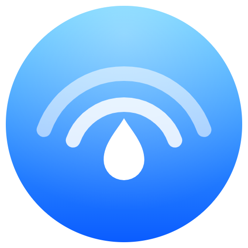

Profilo
Il nome, la foto e il colore sono ciò che vedono gli altri dispositivi nelle vicinanze. Con la visibilità «Solo contatti» li vedono solo i dispositivi abbinati.
Ricezione
Chi ti può trovare
Dove salvare
Quando arriva qualcosa
Contatti
Un dispositivo diventa contatto dopo il primo abbinamento con il codice a 6 cifre (o con il QR per i telefoni). I contatti attendibili possono inviarti file senza chiedere conferma.
Nelle vicinanze, non abbinati
Telefono
Collega iPhone o Android
- Collega il telefono alla stessa rete Wi-Fi di questo PC.
- Nell'app WaveDrop (Android o iPhone) tocca Scansiona il codice QR, oppure inquadra il codice con la Fotocamera e tocca il link.
- Scegli un nome per il telefono e tocca Collega.
- Per averlo come app: su iPhone Condividi → Aggiungi alla schermata Home: l'icona resta collegata, su Android menu ⋮ → Aggiungi a schermata Home.
Puoi usare l'app nativa WaveDrop (Android: APK nelle release su GitHub; iPhone: vedi ios/README.md) oppure l'app web servita da questo PC, senza installare nulla. Il codice QR contiene un segreto monouso e la chiave pubblica del PC, quindi il collegamento è verificato. I file restano cifrati end-to-end tra telefono e PC.
Telefoni collegati
Generale
Bluetooth
Come AirDrop, WaveDrop trasmette un piccolo segnale Bluetooth LE con l'indirizzo di rete. Così trova i PC vicini anche sulle reti che bloccano la ricerca normale (Wi-Fi ospiti) e mette per primi quelli più vicini. I file viaggiano comunque in rete.
AirDrop
Scambia file con iPhone, iPad e Mac attraverso omdrop-owl (oppure OpenDrop). Sul dispositivo Apple AirDrop deve essere su «Tutti per 10 minuti». Mentre il PC è visibile, i file AirDrop vengono accettati senza chiedere e salvati nella cartella dei ricevuti; i dispositivi Apple compaiono nell'overlay con il marchio AirDrop.
Cronologia
Sicurezza
Ogni trasferimento usa chiavi nuove (forward secrecy): anche chi registrasse il traffico oggi non potrebbe leggerlo domani. Nessun file passa da server esterni.

WaveDrop
Aggiornamenti
Novità della versione
Ringraziamenti
WaveDrop esiste grazie a chi ha studiato AirDrop e ha reso pubblici i propri strumenti. Grazie!
L'elenco completo, con le librerie delle app Android e iPhone, è nel file CREDITS.md del progetto. AirDrop e iPhone sono marchi di Apple Inc.; WaveDrop è un progetto indipendente, non affiliato ad Apple.